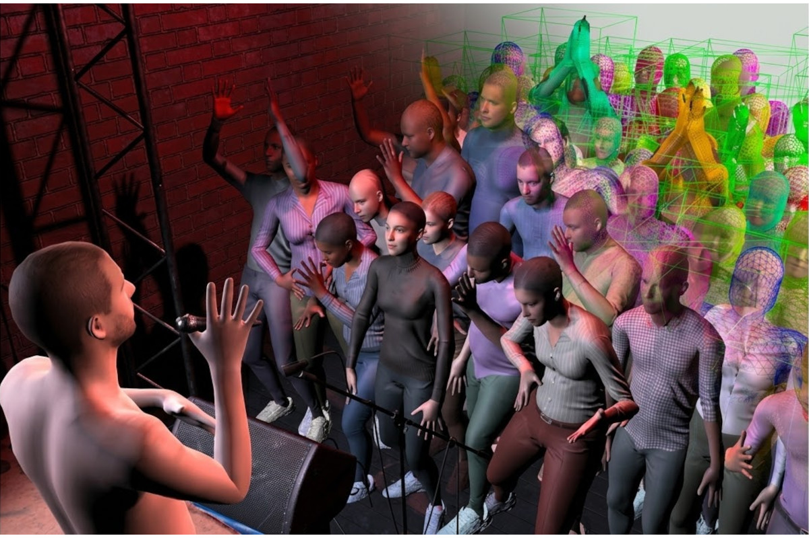
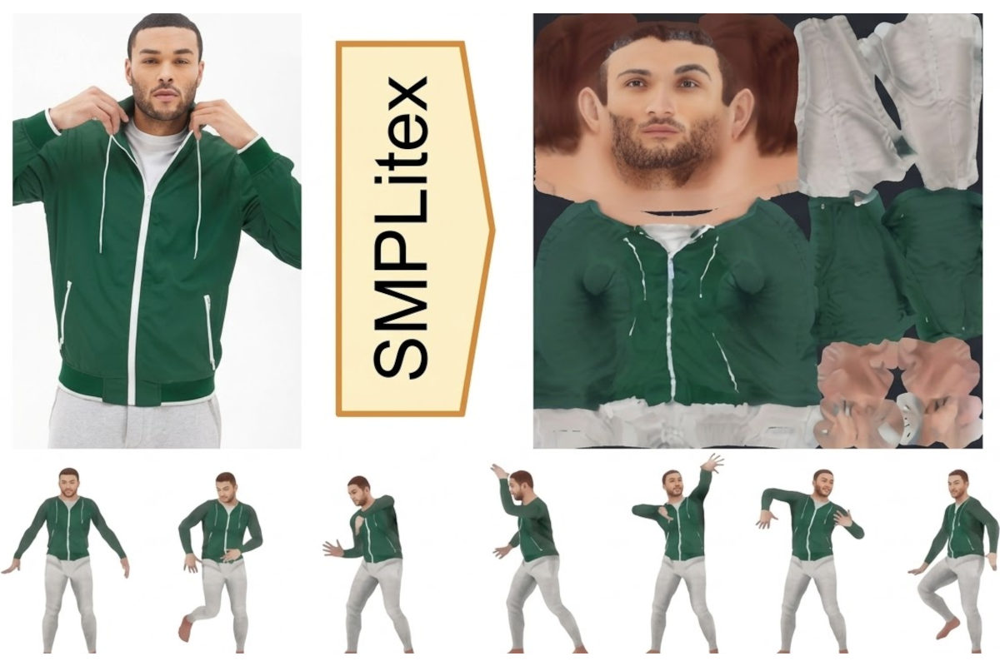
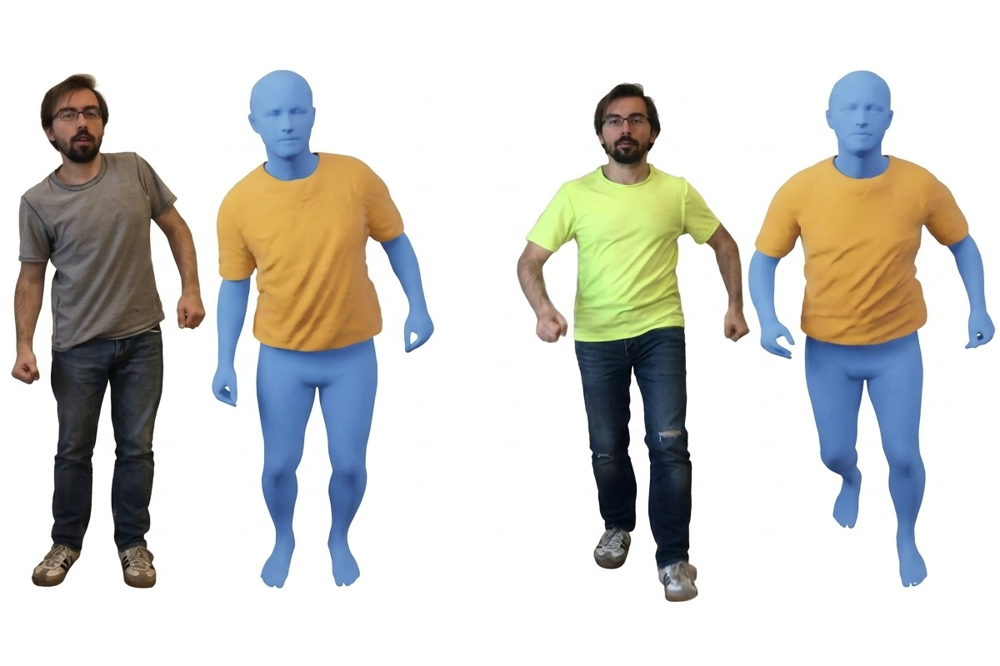
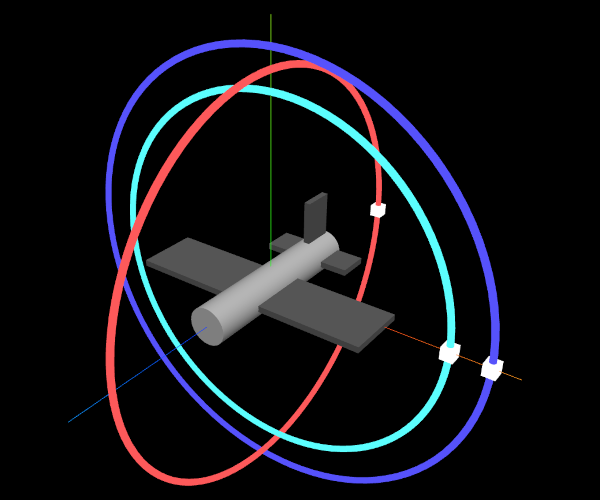
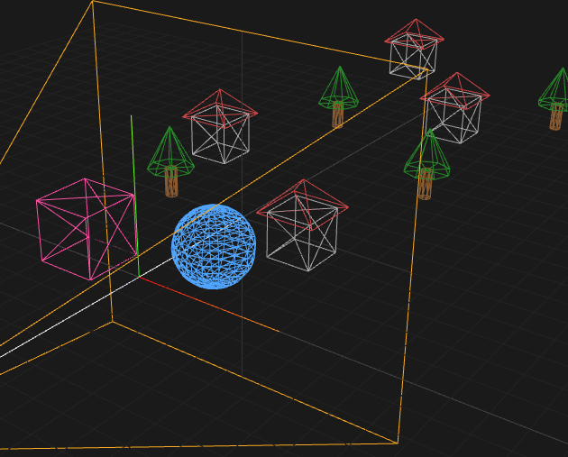
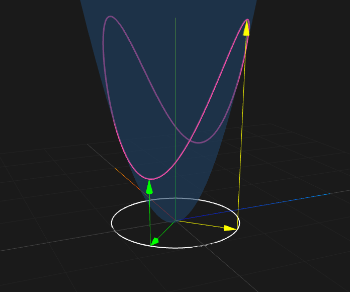

I hold a PhD in Computing (receiving the Outstanding Doctoral Thesis Award) and a Master's in Innovation and Research in Informatics (graduating top of my class) from the Universitat Politècnica de Catalunya (UPC). My research focuses on computer graphics, crowd animation, and avatar digitization. My professional background encompasses extensive experience in the technological research sector, spanning both public institutions and collaborations with industry partners such as Hewlett Packard and Arquimea Research Center, alongside research stays at Google (across its Zurich, Mountain View, Seattle, and San Francisco offices).
Currently, I am an Assistant Professor at the Universidad Rey Juan Carlos (URJC), having previously served as a Distinguished Researcher for four years. I have taught across various undergraduate and graduate programs, notably the Master in Innovation and Research in Informatics and the Bachelor's Degree in Computer Engineering at the UPC, the Bachelor's Degree in Automotive Engineering at the Universitat de Vic (UVic), and the Master's Degree in Computer Graphics, Games, and Virtual Reality, as well as the Bachelor's Degree in Video Game Design and Development at the URJC.
I have led competitive projects as a Principal Investigator, including a Public-Private Collaboration project funded by the Ministry of Science and Innovation and technology transfer contracts with Arquimea Research Center. I have also participated as a researcher in other national and European initiatives, such as the CrowdDNA project. I have published more than ten articles in JCR journals, with notable contributions in ACM Transactions on Graphics (Q1) and Computer-Aided Design (Q1), and I am the co-author of two international patents. I have presented numerous works at leading international conferences, including ICCV, BMVC, WACV, and SGP, and have held positions of responsibility in scientific events, particularly serving as program committee chair for CEIG 2023 and STAG 2025, in addition to joining the executive board of the Spanish Chapter of Eurographics.
Google Scholar ORCID Scopus Web of Science LinkedIn
You can find my complete publication record, citation metrics, and academic profiles on the platforms linked above.

ACM Transactions on Graphics (presented at SIGGRAPH Asia) • 2024

British Machine Vision Conference (BMVC) • 2023

Computer Graphics Forum (Proc. of ACM Symposium on Computer Animation, SCA) • 2022
Below are the interactive WebGL demonstrations developed for the Geometric Modeling course.

This interactive WebGL demonstration illustrates the concept of Euler angles for 3D rotations. You can manipulate the gimbal rings to understand pitch, yaw, and roll, and intuitively observe the phenomenon of gimbal lock in real time.
🎮 Try it!
Explore the mathematics behind perspective projection matrices. This demo allows you to adjust the field of view, aspect ratio, and near and far clipping planes to see exactly how they affect the final rendered image of a 3D scene.
🎮 Try it!
Explore the geometry of symmetric 2x2 matrices and their quadratic forms. This interactive demo allows you to adjust the matrix values to visualize the resulting paraboloid, the unit circle projection, and the corresponding eigenvectors in a 3D environment.
🎮 Try it!
Despacho 20
Edificio de Biblioteca
C/Tulipán s/n,
28933 Móstoles, Madrid
Spain